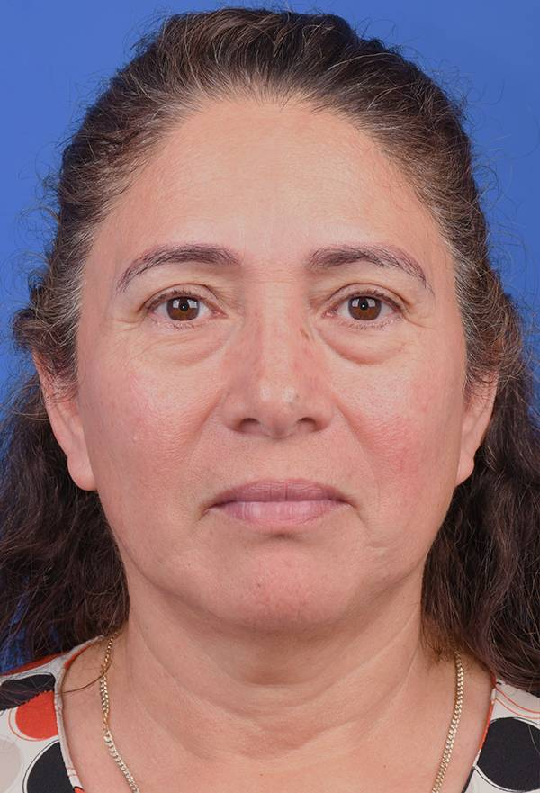
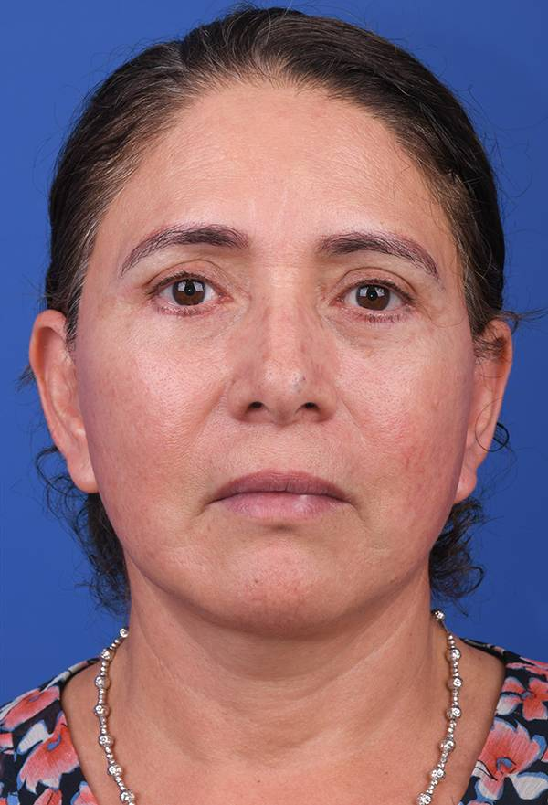

Grossman Plastic Surgery
Rediscover your youthful radiance with a Facelift at Grossman Plastic Surgery. Experience expert care that turns back the clock.
Get StartedRestore natural contours and lower facial volume
In the pursuit of ageless beauty and a refreshed appearance, a facelift stands out as a beacon of transformative care. Our facelift procedure is meticulously designed to rejuvenate your facial contours, mitigate the signs of aging, and enhance your natural beauty.
Led by Dr. Peter Grossman, we harness advanced deep-tissue techniques to ensure your journey towards a revitalized self is both comfortable and rewarding. Embrace the opportunity to reflect your inner youthfulness and vibrancy through our expert care.
Ideal candidates are individuals experiencing moderate to severe lower facial sagging, deep wrinkles, and jowls or a loss of muscle tone in the jawline and neck that cannot be adequately addressed through non-surgical treatments.
Suitable candidates are generally healthy, non-smokers with realistic expectations. During your consultation, our specialists will evaluate your unique facial structure, skin elasticity, and overall health to determine your ideal approach.
Embarking on a facelift journey begins with a detailed consultation, where your aesthetic aspirations and concerns are attentively listened to. The procedure itself involves carefully placed incisions, through which the underlying tissues are adjusted and excess skin removed to achieve a more youthful contour. Our surgeons employ innovative techniques to minimize recovery time and enhance comfort. Post-surgery, patients receive comprehensive care instructions and follow-up appointments to ensure a smooth, seamless healing process.
Preparation for a facelift includes a series of pre-operative assessments and personalized guidance to ensure your body is optimally ready. Patients are advised to abstain from smoking, avoid certain medications, and maintain a healthy lifestyle to promote better healing. Detailed instructions on pre-surgery nutrition, skin care, and necessary post-operative arrangements will be provided.
Recovery from a facelift involves a period of rest and careful adherence to post-operative care instructions to ensure optimal healing. Swelling, bruising, and discomfort are common initially but gradually subside. We offer a supportive recovery environment, including follow-up visits and direct access to our nursing team for any queries or concerns. Patients typically resume normal activities within a few weeks.
Pain management post-facelift is a crucial aspect of the recovery process. We prioritize your complete comfort by providing effective, personalized pain relief options. Mild to moderate discomfort can be expected, which is highly manageable through short-term prescribed medications and cold compresses. Our medical team closely monitors your pain levels and healing milestones.
The expected results of a facelift include a more youthful facial appearance, with smoother skin, refined contours, and significantly reduced sagging. Our absolute goal is to achieve natural-looking results that enhance your native features and reflect your inherent beauty. The transformative effects are long-lasting, allowing you to enjoy a rejuvenated appearance for years to come.
See More Results
Before
AfterCase Study 12 of 48 · Individual patient results may vary

MD, FACS · Board Certified Plastic Surgeon
Dr. Peter Grossman is a board-certified plastic surgeon with more than 30 years of experience serving patients throughout the Los Angeles area. Renowned for his refined aesthetic approach and meticulous surgical technique, Dr. Grossman specializes in facial rejuvenation, breast surgery, body contouring, and reconstructive procedures. He is the founder and Medical Director of the Grossman Burn Center and has earned recognition for combining advanced reconstructive expertise with natural-looking cosmetic results.
A former President of the Los Angeles Society of Plastic Surgeons, Dr. Grossman has dedicated his career to delivering highly personalized care with an emphasis on safety, artistry, and long-term patient confidence. His luxury private practice in West Hills attracts patients seeking sophisticated, elegant outcomes tailored to their individual goals.
Dr. Peter Grossman is regularly featured across major national broadcasting networks.
We Proudly Offer Cosmetic Plastic Surgery & Advanced Aesthetic Med Spa Services

Experience bespoke aesthetic care in Beverly Hills